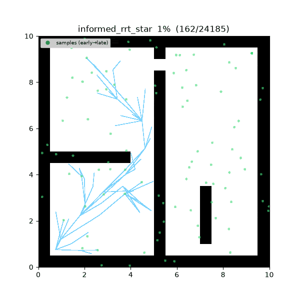
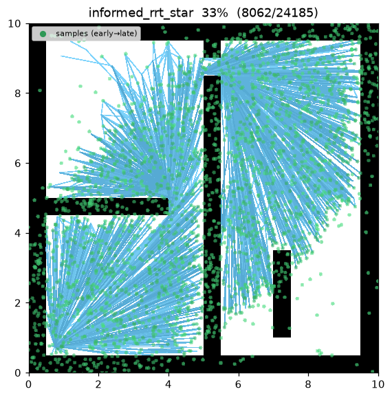
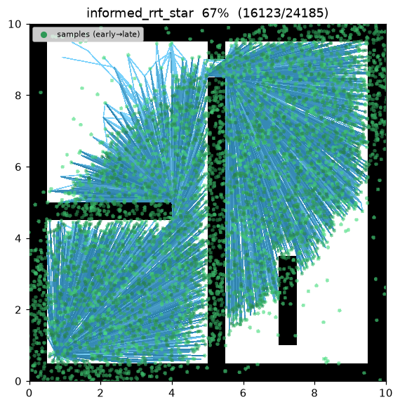
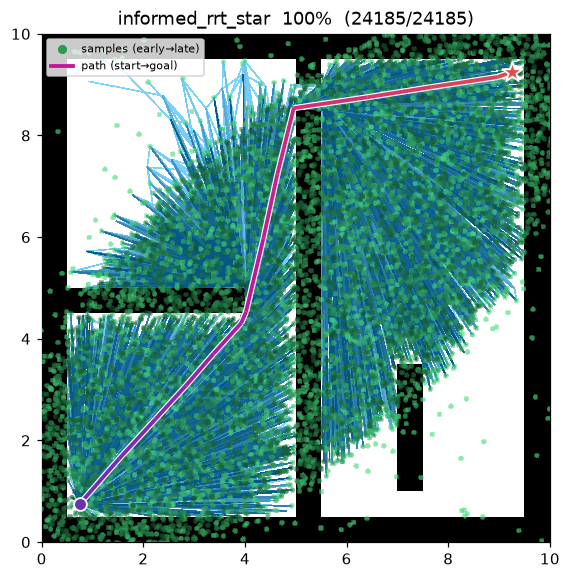
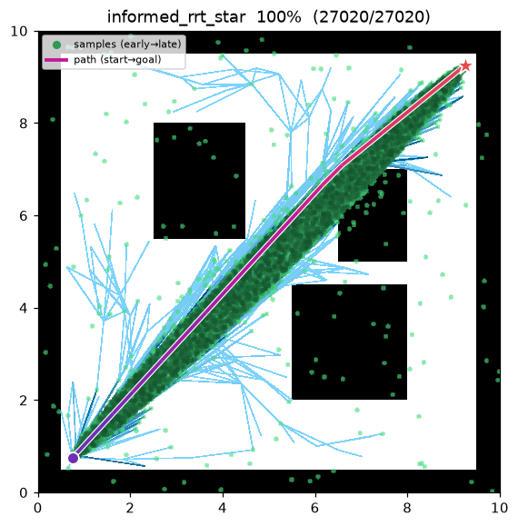

Informed RRT* (Informed RRT-star)¶
| Item | Description |
|---|---|
| Category | sampling-based, single-query, anytime, asymptotically optimal |
| Required capability | SamplingSpace |
| Completeness | probabilistically complete |
| Optimality | asymptotically optimal (same guarantee as RRT*, typically converges faster) |
| Complexity | dominated by the near-neighbor query per iteration (same as RRT*) |
| Original paper | Gammell, Srinivasa & Barfoot (2014) 1 |
Background¶
Gammell et al.1 proposed Informed RRT*, which leaves RRT*'s2 tree-growth unchanged and modifies only the sample distribution once a solution exists. RRT* keeps sampling uniformly over the whole space even after finding a solution, and most of those draws land in regions that cannot improve the current best solution (the incumbent). Once a solution exists, Informed RRT* draws samples only inside the informed ellipse — foci at start and goal, transverse diameter equal to the current solution cost \(c_{\text{best}}\) — concentrating samples where the incumbent can still improve.
The paper's contribution is one sampling distribution. The tree-growth mechanics — choose-parent, rewire, anytime incumbent tracking — are identical to RRT*.
How It Works¶
Search on maze01. Before a solution exists sampling looks like plain RRT*, but once the first
path is found the frontier visibly collapses into the informed ellipse and keeps tightening as the
incumbent improves.

Intermediate search progress (left → right: early / middle / final path):
 |
 |
 |
Final result on open01 — the ellipse shrinks almost onto the start-goal line, so nearly all
post-solution samples land right around the direct path:

It differs from RRT* by exactly one line — how a sample is drawn:
INFORMED_RRT_STAR(start, goal):
T ← {start}; c_best ← ∞
for i in 1..max_iterations: # anytime — runs the full budget
if c_best < ∞:
x_rand ← informed_sample(start, goal, c_best) # only inside the improvable ellipse
else:
x_rand ← (goal with prob. goal_bias) else sample() # before a solution: same as RRT*
x_near ← nearest(T, x_rand)
x_new ← steer(x_near, x_rand, step_size)
if not is_motion_valid(x_near, x_new): continue
N ← near(T, x_new, neighbor_radius)
parent ← argmin_{x ∈ N ∪ {x_near}} cost(x) + c(x, x_new) # choose-parent
T.add(x_new, parent)
for x ∈ N: # rewire
if cost(x_new) + c(x_new, x) < cost(x) and is_motion_valid(x_new, x):
x.parent ← x_new
if distance(x_new, goal) ≤ goal_tolerance:
c_best ← min(c_best, path through x_new) # keep searching, updating the incumbent
return best
Before a solution is found it uses exactly RRT*'s goal-biased uniform sampling. The instant the first solution appears, sampling tightens into the ellipse, and each time the incumbent shrinks the ellipse tightens further, concentrating samples on just the region where a better solution could lie.
Reproduce:
python python/demos/demo_informed_rrt_star.py \
--map maps/grid/maze01.yaml --scenario maps/scenarios/maze01_s1.yaml \
--params configs/global_planning/informed_rrt_star.yaml --trace out/informed_rrt_star.jsonl
python tools/viz/replay.py out/informed_rrt_star.jsonl --gif out/informed_rrt_star.gif
Properties¶
- Completeness: probabilistically complete (same as RRT*)1.
- Optimality: asymptotically optimal. Even though samples concentrate inside the ellipse, the ellipse always contains the optimal path, so RRT*'s almost-sure optimality guarantee is preserved1.
- Convergence rate: because post-solution samples land only in the improvable region, it tightens the path faster and denser than RRT* at the same iteration budget, eliminating the waste of uniform sampling filling non-improving regions of large free spaces1.
- Cost: per-iteration cost is essentially the same as RRT* (an ellipse draw is just one transform of a uniform draw).
Informed Sampling — Derivation¶
Informed ellipse (Gammell et al. 2014). When a solution cost \(c_{\text{best}}\) exists, samples are drawn only within the ellipse with foci at start and goal. With \(c_{\min}=\lVert\text{start}-\text{goal}\rVert\),
centered at the midpoint of the two points and rotated to the start→goal axis. Any point outside \(x^2/r_1^2+y^2/r_2^2\le1\) cannot lie on a path that improves \(c_{\text{best}}\), so it is excluded from sampling.
Derivation. Any path through a point \(x\) has length \(\ge f(x)=\lVert\text{start}-x\rVert+\lVert x-\text{goal}\rVert\) (triangle inequality). If \(f(x)>c_{\text{best}}\), routing through \(x\) cannot reduce the incumbent, so it is safe to drop; the remaining set \(\{x:f(x)\le c_{\text{best}}\}\) is exactly the definition of an ellipse — sum of distances to the two foci bounded (major axis \(=c_{\text{best}}\)). With inter-focus distance \(c_{\min}\), the semi-axes follow immediately: \(r_1=c_{\text{best}}/2\) and \(r_2=\tfrac12\sqrt{c_{\text{best}}^{\,2}-c_{\min}^{\,2}}\). As the incumbent shrinks, the ellipse tightens and concentrates samples on just the region where a better solution could lie. ∎
Note
The ellipse always contains the optimal path (since the optimal cost \(c^\* \le c_{\text{best}}\), every point on the optimal path satisfies \(f(x)\le c^\*\le c_{\text{best}}\)). Restricting samples to the ellipse therefore does not break RRT*'s optimality — it only removes wasted samples, which is why informed sampling is "free acceleration".
In this project the ellipse draw is implemented once as informed_sample, shared by every informed
planner including BIT*.
Parameters¶
| Name | Type | Default | Range | Description |
|---|---|---|---|---|
max_iterations |
int | 8000 | [1, 200000] | Iteration budget (anytime — current best is returned when exhausted) |
step_size |
float | 0.5 | [0.01, 100.0] | Steer extension distance η (m) |
goal_bias |
float | 0.05 | [0.0, 1.0] | Probability of sampling the goal directly before a solution exists |
goal_tolerance |
float | 0.3 | [0.0, 100.0] | Goal-reached radius (m) |
neighbor_radius |
float | 1.5 | [0.01, 100.0] | Choose-parent / rewire neighborhood radius (m) |
seed |
int | 1 | [0, 2^31−1] | Random seed (reproducibility) |
Emitted Trace Events¶
planning_started → (sample_drawn, edge_added, rewire*)* → path_found* → planning_finished
It emits the same events as RRT*. path_found can be emitted multiple times (each
time the incumbent improves), and every sample_drawn after the first path_found is a sample from
inside the ellipse.
References¶
-
Gammell, J. D., Srinivasa, S. S., & Barfoot, T. D. (2014). "Informed RRT*: Optimal sampling-based path planning focused via direct sampling of an admissible ellipsoidal heuristic." Proc. IEEE/RSJ IROS, 2997–3004. doi:10.1109/IROS.2014.6942976 · PDF (arXiv) ↩↩↩↩↩
-
Karaman, S., & Frazzoli, E. (2011). "Sampling-based algorithms for optimal motion planning." The International Journal of Robotics Research, 30(7), 846–894. doi:10.1177/0278364911406761 · PDF (arXiv) ↩